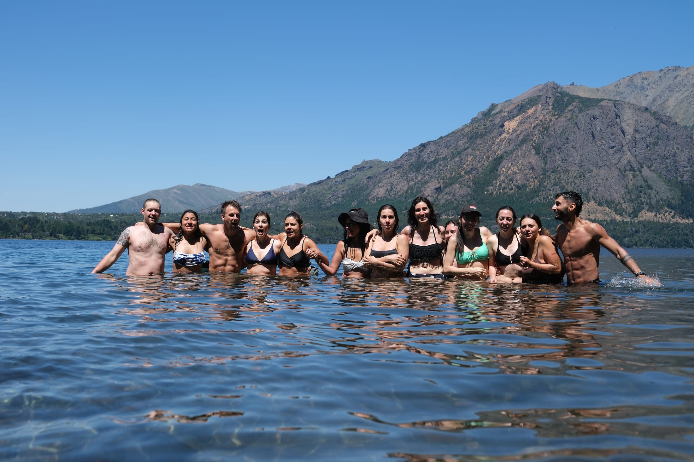

"
"Llegué buscando respuestas y terminé encontrándome a mí."
Círculo Humano · Academia
Sé lo desesperante que es tener esto en la cabeza durante años. Sé también lo solitaria y confusa que puede ser esta búsqueda. No es necesario vivir este proceso en soledad.
Mirá el video
Círculo Humano es un espacio para personas que no están dispuestas a resignarse y desean crear una vida más auténtica.
Una mirada a lo que vivimos cada semana en el Círculo.
¿Qué es el Círculo Humano?
No es un curso. Es un espacio de transformación. Una frecuencia para salir del automático y empezar a vivir con libertad.
Un espacio para conectar con personas que se hacen las mismas preguntas. Llegó el momento de dejar de sostener historias que no nos representan. Círculo Humano es una oportunidad para detenerse, observar distinto y descubrir que lo que buscamos está más cerca de lo que jamás imaginamos.

Quién acompaña este espacio
Economista, coach de vida y fundador de la Academia Círculo Humano. Junto a un equipo de profesionales.
Matías se dedicaba a la economía y a los 32 años decidió saltar al vacío para dedicarse a su pasión. Esa transformación tuvo como resultado la creación de este espacio: acompañar a cientos de personas a hacer lo mismo, de una forma amorosa y cuidada.
Para quienes sienten que el cambio verdadero necesita continuidad, práctica y sostén.
Qué vas a encontrar
Un encuentro con Mati Rebozov para comprender dónde estás y cómo acompañarte.
Todos los sábados de 10:00 a 11:30 hs (Argentina), presenciales y online.
Acceso completo para volver a cada encuentro cuando lo necesites.
Un círculo de personas comprometidas con vivir desde la autenticidad y la coherencia.
Acceso completo a los cursos
En movimiento
Esto no es terapia tradicional
Basta de buscar el porqué una y otra vez. Basta de procesos eternos hablando de lo mismo. Es hora de mirarnos con honestidad, compartiendo el camino de manera amorosa, cuidada y divertida — para que aparezcan las respuestas que una mente sola nunca encontraría.
Voces del proceso
"Llegué buscando respuestas y terminé encontrándome a mí."
"Pensé que necesitaba cambiar de trabajo. Descubrí que primero necesitaba cambiar la relación conmigo."
"Por primera vez sentí que podía hablar sin tener que demostrar nada."
"Lo más valioso no fueron las herramientas. Fue descubrir que había otras personas viviendo exactamente lo mismo que yo."
Para empezar
Cada encuentro busca que te vayas con más claridad y más energía de la que trajiste.
